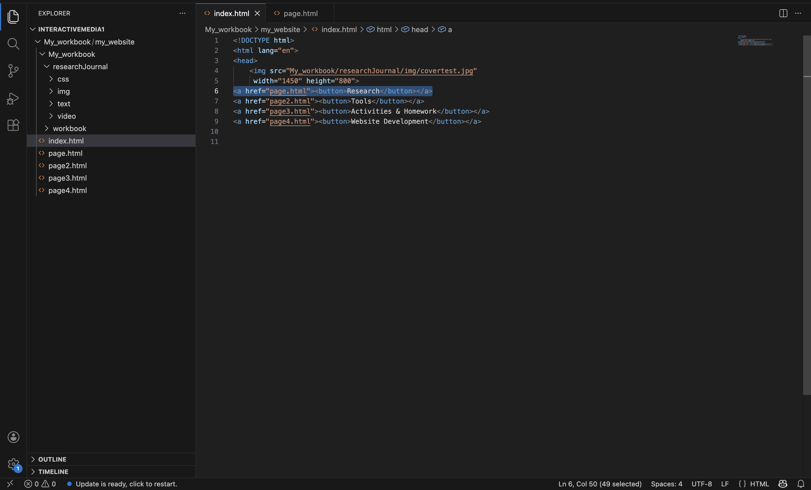
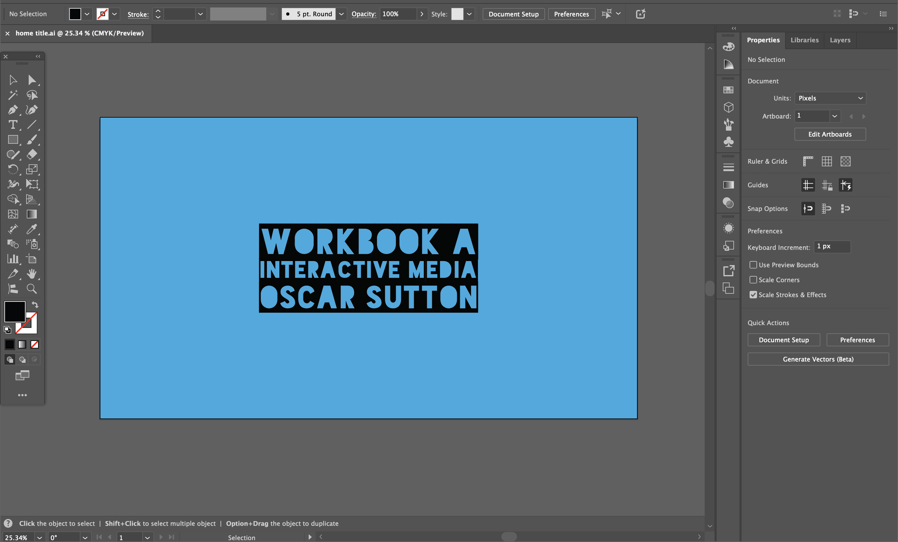
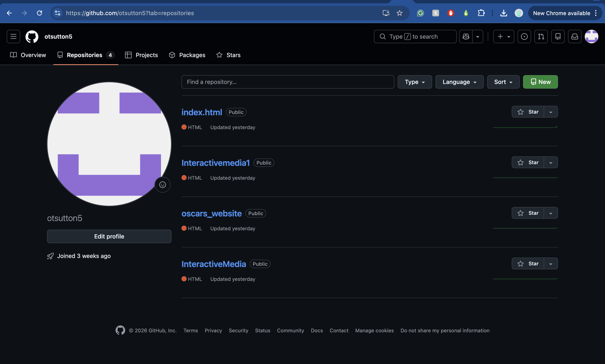
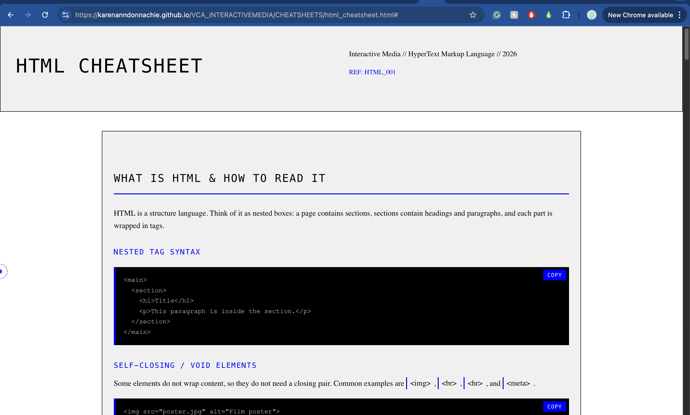
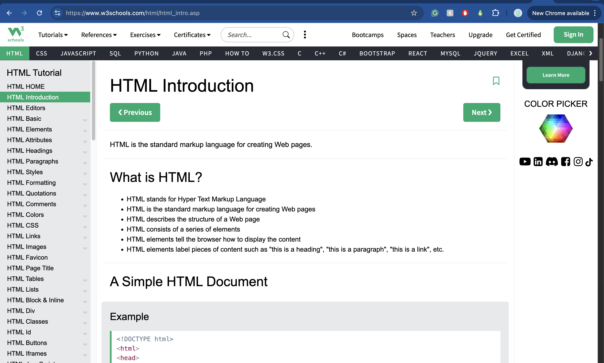
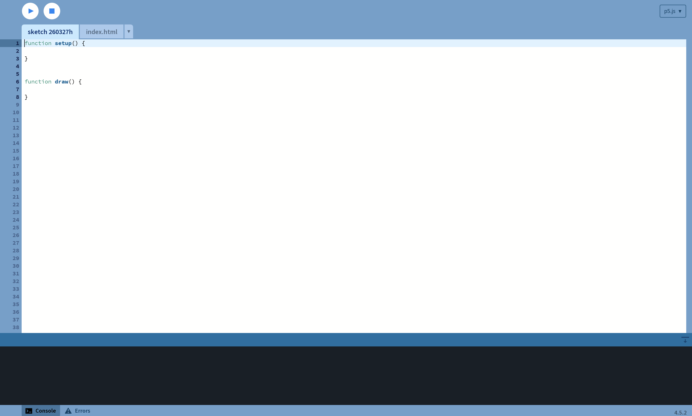
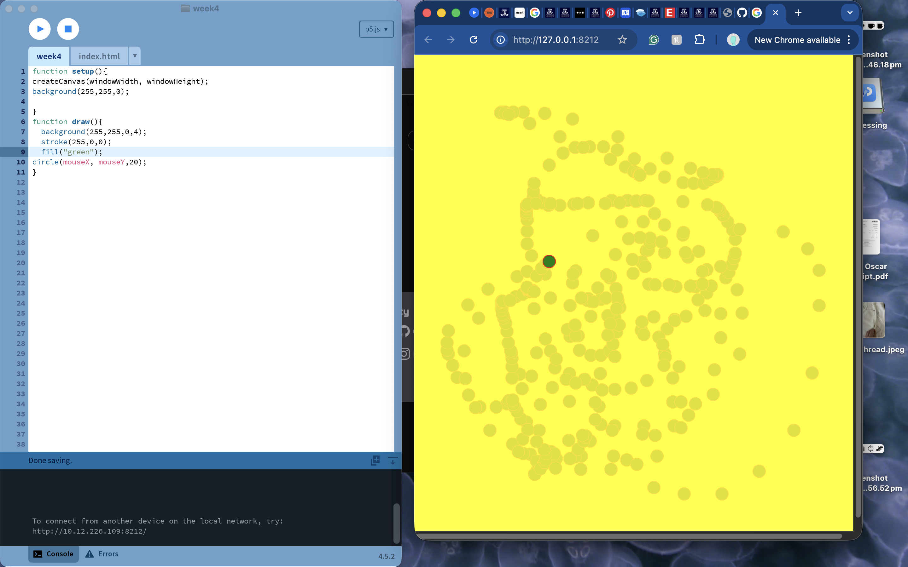

Visual Studio Code (VS Code) is a free, lightweight, and highly popular open-source code editor developed by Microsoft for Windows, macOS, and Linux. It supports nearly all major programming languages, featuring built-in debugging, Git source control, syntax highlighting, and AI-powered IntelliSense autocomplete. This is the application used to code my website, using HTML primarily.

Adobe Illustrator is a professional design software used to create vector graphics, meaning artwork that can scale infinitely without losing quality. I used the program to design the home cover page of my website.

GitHub is a platform where you can store, manage, and share code online. I used GitHub to upload my website HTML files via the repository section. This transformed my HTML coding from localised private files to a public website with a domain accessible from any device.

This website, created by one of my tutors, Karen, was very helpful in teaching me how to format and build my website, offering a great range of HTML commands to build my foundational knowledge.

W3Schools is a beginner-friendly website that teaches web development languages, such as HTML, CSS, and JavaScript, through clear explanations and interactive examples. With such a wide range of code on offer, this was highly useful in refining my website with stylistic elements such as text formatting.


Processing is a beginner-friendly programming language and environment designed for creating visual art, graphics, and interactive designs through code. It is widely used by designers to experiment with generative design, animation, and creative coding. Today (Friday 27 March), in our tutorial, we experimented with coding using p5.js rather than HTML.

p5.js Reference is a friendly tool for learning creative coding. It is a free and open-source JavaScript library built by an inclusive, nurturing community. p5.js welcomes artists, designers, beginners, educators, and anyone else! We also briefly looked at p5.js Reference in our tutorial, discovering its library of creative coding comands.
GitHub, Inc. 2026. “GitHub Dashboard.” Accessed March 21, 2026. https://github.com/dashboard Donnachie, Karen Ann. “HTML Cheatsheet.” Accessed March 20, 2026. https://karenanndonnachie.github.io/VCA_INTERACTIVEMEDIA/CHEATSHEETS/html_cheatsheet.html Refsnes Data AS. 2026. “W3Schools.” Accessed March 20, 2026. https://www.w3schools.com/ Processing Foundation. “Processing.” Accessed March 27, 2026. https://processing.org/ “p5.js.” Accessed March 27, 2026. https://p5js.org/